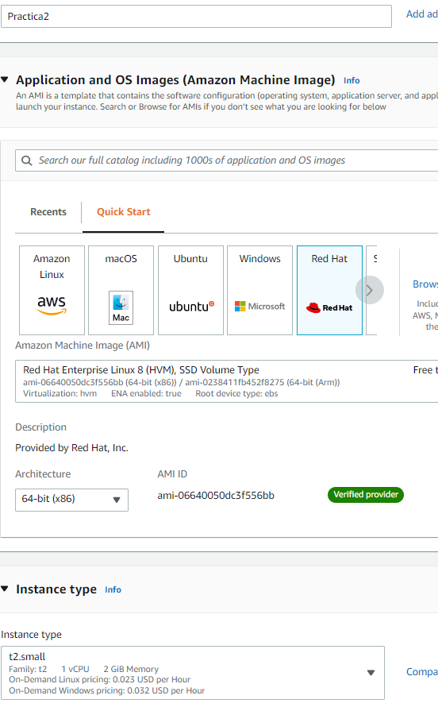
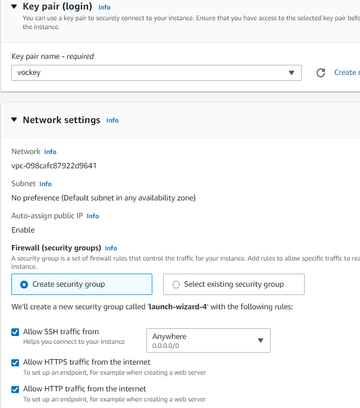
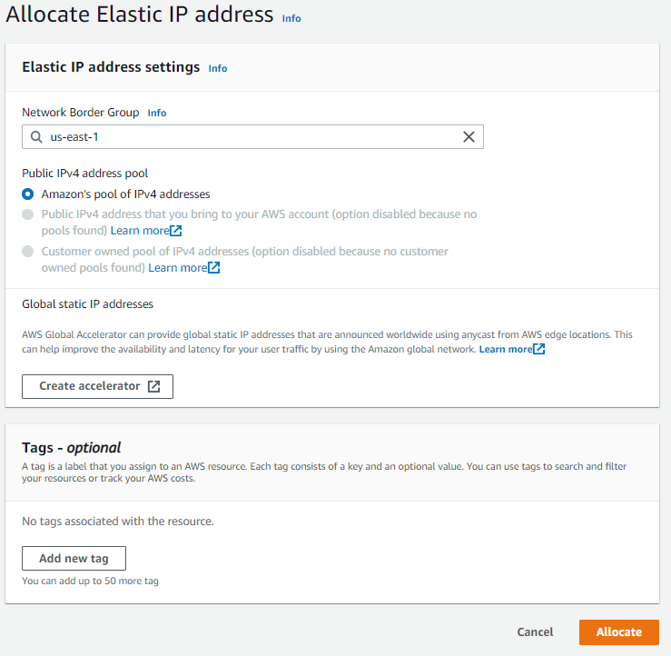
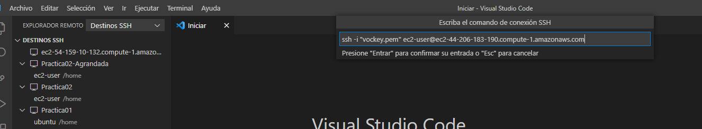
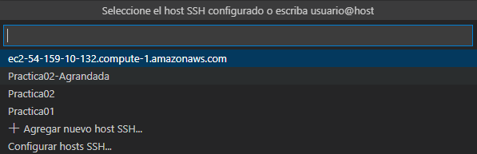
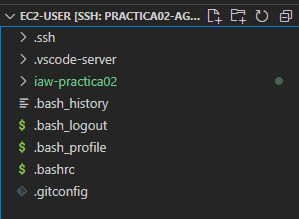
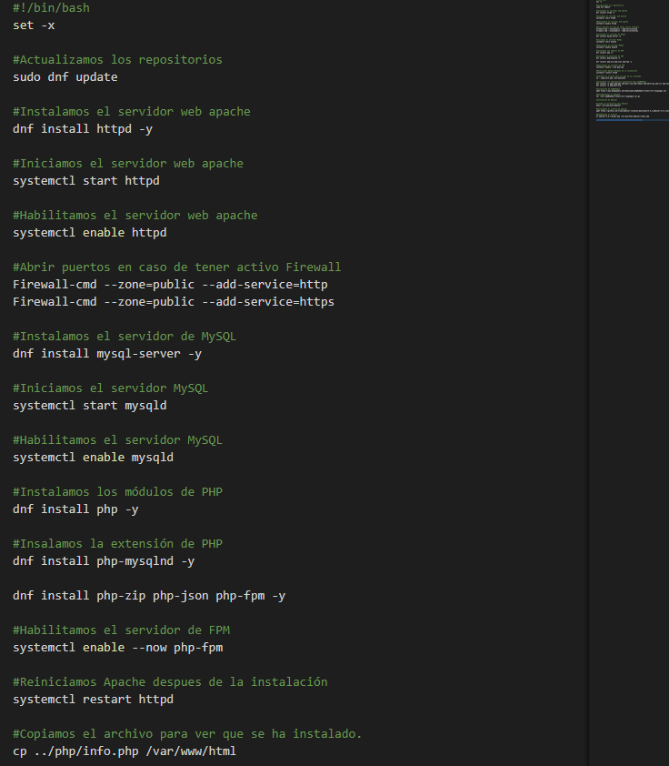
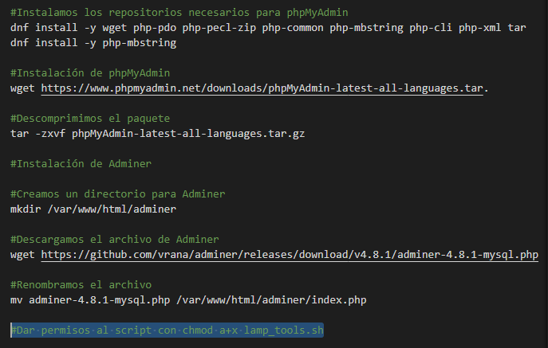
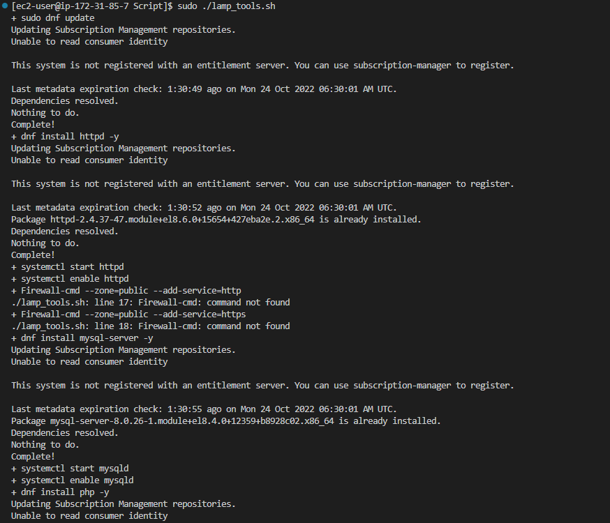
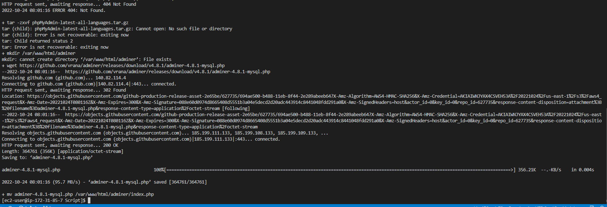

iaw-practica02
Instalación de LAMP sack en RHEL por Rodrigo Alarcón Márquez
1º Paso: Creación de Estancia en Amazon
Dentro de AWS Academy creamos una nueva estancia.
Le tendremos que asignar un nombre, en aplicaciones escogeremos Red Hat y en el tipo de instancia tendremos que escoger una que posea al menos 2 GB de memoria.
La llave que escogeremos será Vodkey y abriremos los puertos SSH, HTTPS y HTTP.


2º Paso: IP Elastica
A la estancia que acabamos de crear deberemos de asignarle una IP elastica.

3º Paso: Virtual Box
Abrimos Virtual Box y dentro del explorador remoto agregamos la nueva estancia con la clave que podemos encontrar conectando con la instancia en la sección SSH client.

4º Paso: Conexión con cliente SSH
Dentro de Virtual Box conectamos con el cliente SSH haciendo click en la esquina verde inferior izquierda. Deberemos marcar que queremos trabajar con Linux y poner la dirección del cliente.

5º Paso: Actualización y conexión con Github
Una vez hemos accedido, ya podemos trabajar con el terminal.
Comenzaremos actualizando todos los repositorios con el comando:
sudo apt-get update.
A continuación utilizaremos deberemos de instalar la extensión de git con el comando:
sudo apt-get install git
```
Tras ello, asignaremos un nombre y correo electronico con los comandos:
```bash
**git config --global user.name "Nombre"**
**git config --global user.email "correo@electronico .com"**
Podrémos comprobar el cambio con el comando:
**git config --list**
Por último enlazaremos virtual Box con un clon de nuestro repositorio de Git hub con el comando:
git clone https:// github.com/Nombre_de_Repositorio/taller-git-github.git
Tras hacerlo, una carpeta con el nombre del repositorio debería de haber aparecido en el árbol de la izquierda.
6º Paso: Creación de las carpetas
Dentro del directorio recien creado (iaw-practica02 en mi caso), creamos las carpetas php y script.
Dentro de php crearemos un archivo llamado info.php y dentro de script crearemos otro archivo llamado lamp_tools-sh.
Será dentro de lamp_tools.sh donde escribiremos los comandos que automatizarán las instalaciones.

7º Paso: Creación del script
Comenzamos el scrip con:
**#!/bin/bash**
**set -x**
Actualizamos los repositorios con el comando:
sudo dnf update
Instalamos el servidor web apache
dnf install httpd -y
Iniciamos el servidor web apache
systemctl start httpd
Habilitamos el servidor web apache
systemctl enable httpd
Abrir puertos en caso de tener activo Firewall
Firewall-cmd --zone=public --add-service=http
Firewall-cmd --zone=public --add-service=https
Instalamos el servidor de MySQL
dnf install mysql-server -y
Iniciamos el servidor MySQL
systemctl start mysqld
Habilitamos el servidor MySQL
systemctl enable mysqld
Instalamos los módulos de PHP
dnf install php -y
Instalamos las extensiones de PHP
dnf install php-mysqlnd -y
dnf install php-zip php-json php-fpm -y
Habilitamos el servidor de FPM
systemctl enable --now php-fpm
Reiniciamos Apache despues de la instalación
systemctl restart httpd
Copiamos el archivo para ver que se ha instalado.
cp ../php/info.php /var/www/html
Instalamos los repositorios necesarios para phpMyAdmin
dnf install -y wget php-pdo php-pecl-zip php-common php-mbstring php-cli php-xml tar
dnf install -y php-mbstring
Instalación de phpMyAdmin
wget https://www.phpmyadmin.net/downloads/phpMyAdmin-latest-all-languages.tar.
Descomprimimos el paquete
tar -zxvf phpMyAdmin-latest-all-languages.tar.gz
Instalamos Adminer
Para ello creamos un directorio para Adminer
mkdir /var/www/html/adminer
Descargamos el archivo de Adminer
wget https://github.com/vrana/adminer/releases/download/v4.8.1/adminer-4.8.1-mysql.php
Por ultimo daremos permisos al script con
chmod a+x lamp_tools.sh


Paso final: Ejecutamos el script
Para ejecutarlo deberemos de ejecutar dentro del directorio iaw-practica02 en el terminal el comando:
sudo ./lamp_tools.sh

